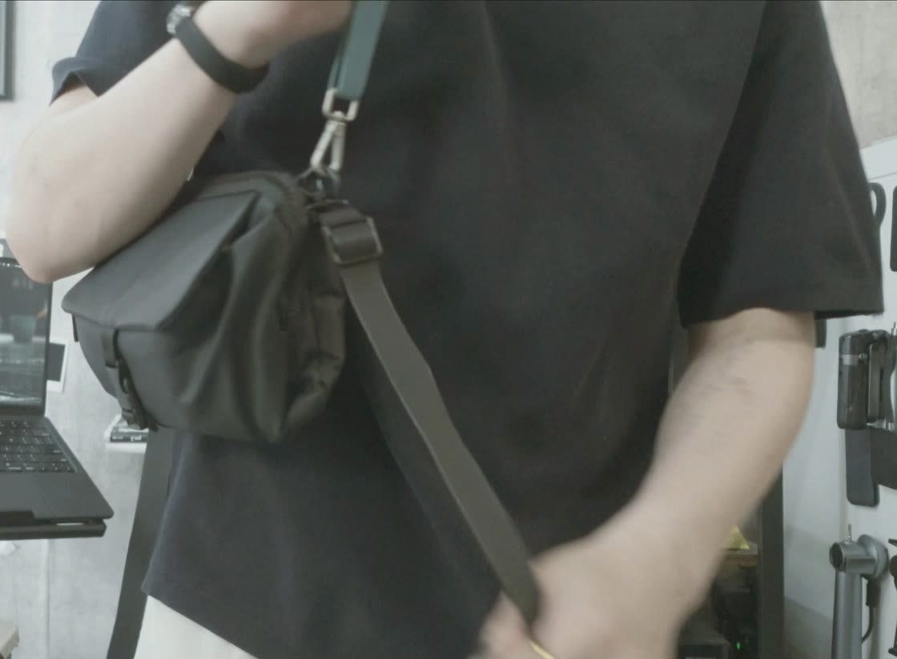
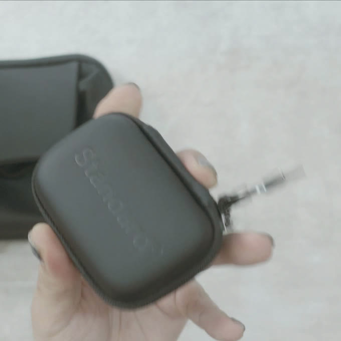

4.5room
youtube ／ 2022.12.14 —
玄関
entrance動画で紹介して、そのまま日常に残ったものだけ。日付は、その道具を動画で紹介した月。

手で書くための道具

※ 掲載しているのは、実際に購入して使っている（または製品提供を受けて使い続けている）ものだけです。
※ 商品リンクにはAmazonアソシエイトを含むアフィリエイト広告が含まれます。価格・在庫はリンク先をご確認ください。
資料室
archive動画にできない長さの話は、noteに書いています。